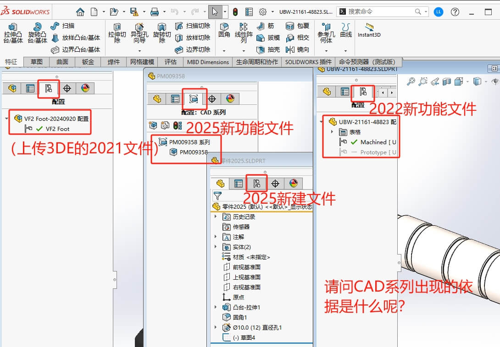
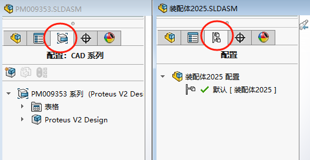

SOLIDWORKS-Q&A
Q2025新功能“使用书签保存检查文件 ”，如果没有3DE账号或角色。是否有效？
A
CAD出现的依据是什么？
其他
Q核心数问题
看使用“设计类”还是“仿真类”产品
关于SW设计类的CPU核心使用问题：SW程序多线程在执行时，是由系统在多核心上分配，同时在单核运行。也就是我们无需太在意核心数，还是已主频为主（当然多核心也有利于系统分配其他程序，也有一点点效果）
关于SW仿真类的CPU核心使用问题：仿真计算类的是可以多核运算。
装配体类
Q：能把虚拟零部件的^后缀去掉嘛？
A：分2部分说明：1、设计树名称可以在零部件右键【属性-零部件名称】修改，2、这种修改只会在设计树生效，在打开的零件界面或BOM表明细里，还是带^符号的。
CAD系列
这个CAD系列是在2025后出现，其出现的依据是什么？
图１：是否和上传到3DE云后，下载就会按CAD系列配置来；
图２：是新建的文件，就和旧版本的配置一样
